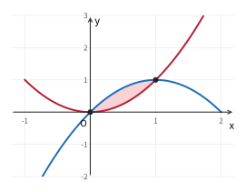

ホーム ＞ 数学II ＞ 積分法（定積分・面積）
2つの放物線 \(y=x^2\) と \(y=-x^2+2x\) で囲まれた図形の面積を求めよ。
交点の \(x\) 座標 \(\alpha,\beta\) を求め、差を \(-2(x-\alpha)(x-\beta)\) とみると \(\dfrac{2(\beta-\alpha)^3}{6}\)。\(\dfrac16\) 公式で一気に計算できる。
\[x^2=-x^2+2x\ \Rightarrow\ 2 x^{2} - 2 x=0\ \Rightarrow\ x=0,\ 1\]

上が \(y=- x^{2} + 2 x\)、下が \(y=x^2\)。差は \(- 2 x^{2} + 2 x\)。
\(\displaystyle\int_\alpha^\beta(x-\alpha)(\beta-x)dx=\dfrac{(\beta-\alpha)^3}{6}\)。
【答案（テストに書く形）】
答